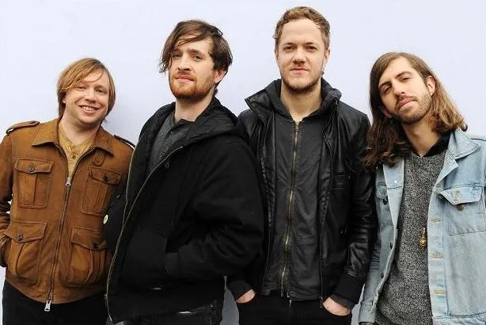

Imagine Dragons
Breve resumen sobre la banda
Imagine dragons es una banda proveniente de Estados unidos conformada en el 2008 donde hoy sus integrantes son Wayne Sermon (guitarrista), Ben McKee (bajista), Dan Reynolds (vocalista) y por Daniel Platzman (baterista). Su género musical varía entre el rock y el indie pop con el rock alternativo. Por sus grandes éxitos musicales como "it´s time", "radioactive" y "thunder" obtuvieron premios Grammy, American Music Awards y Billboard Music Awards y son una de las bandas más reconocidas del mundo actualmente.
